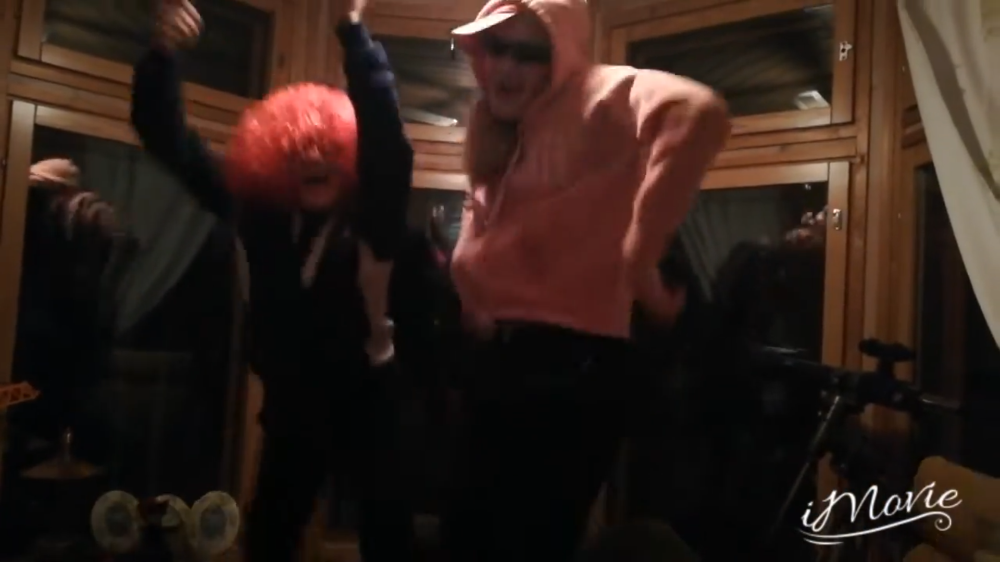

Perttiina ja Mattiina

Perttiina ja Mattiina perustuu Lampi Lampelan hitti kirjaan: "Perttiinan ja Mattiinan joulu".
Perttiina (Venla Nuutinen) ja Mattiina (Maija Paakkunainen) ovat parhaat kaverit. Tämä elokuva näyttää kuinka ystävyys on elämän tärkein asia. Vaikka joku kiusaisi tai tylsyys koittaa, heillä on aina toisensa.
Esitysajat